Okushiri
Okushiri · Hokkaido
Okushiri
Highlighted on the Hokkaido map.
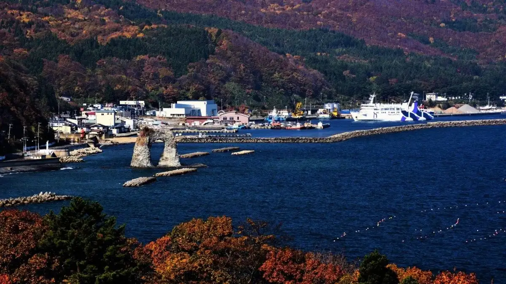
Stay
奥尻島 御宿きくち
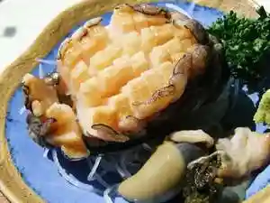
Onjuku Kikuchi
Inn in Okushiri, Hokkaido.
旅の宿 大須田
Tabi no Yado Osuda
Inn in Okushiri, Hokkaido.
岡本旅館
Okamoto Ryokan
Ryokan inn in Okushiri, Hokkaido.
奥尻ゲストハウス imacoco
Okushiri Guesthouse imacoco
Guesthouse in Okushiri, Hokkaido.
民宿 いなほ
Minshuku Inaho
Guesthouse (minshuku) in Okushiri, Hokkaido.
民宿 木村さん家
Minshuku Kimurasan-chi
Guesthouse (minshuku) in Okushiri, Hokkaido.
トラベルハウス想い出
Travel House Omoide
Guesthouse in Okushiri, Hokkaido.
民宿 いしおか
Minshuku Ishioka
Guesthouse (minshuku) in Okushiri, Hokkaido.
民宿 清運丸
Minshuku Seiunmaru
Guesthouse (minshuku) in Okushiri, Hokkaido.
旅館 青葉荘
Ryokan Aobaso
Ryokan inn in Okushiri, Hokkaido.
素泊民宿 島じかん
Shimajikan
Room-only guesthouse in Okushiri, Hokkaido.
丘の宿 優凪
Oka no Yado Yuna
Inn in Okushiri, Hokkaido.
Dining
旅の宿 大須田
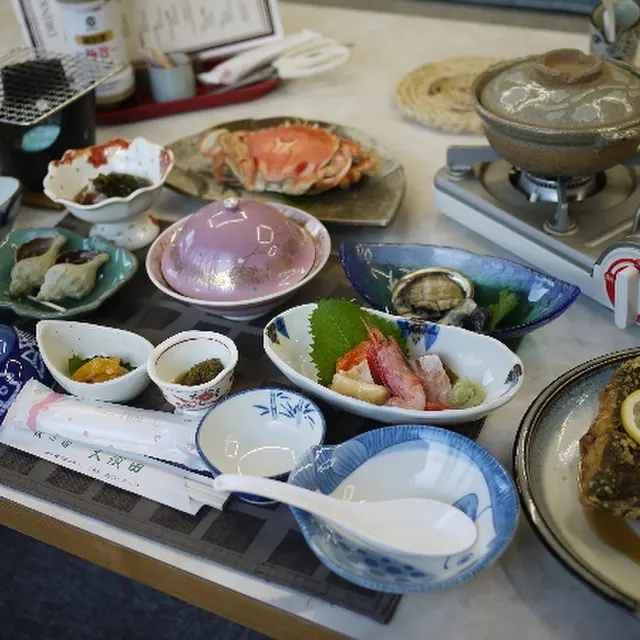
Tabi No Yado Oosuda
竹田荘

Takeda Sou
ベラヴィスタ
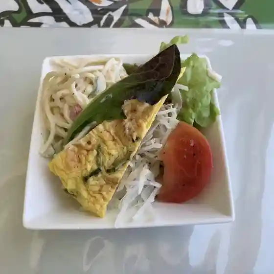
Beravisuta
お食事処 潮騒
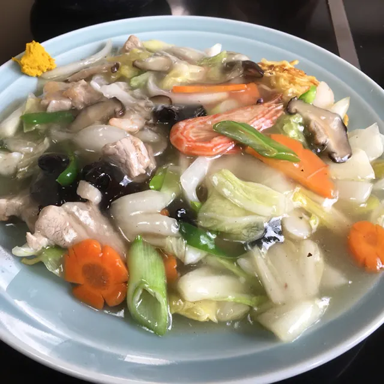
O Shokuji Tokoro Shiosai
二代目波止場
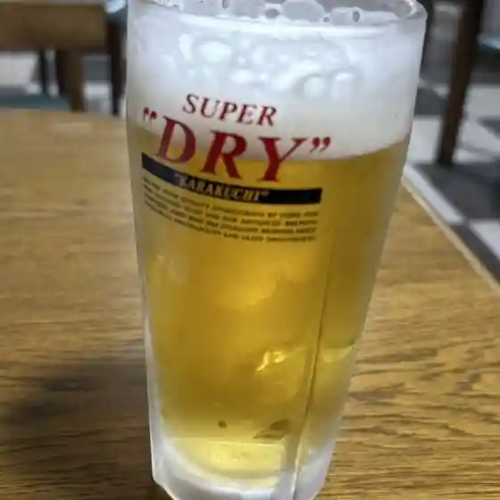
Nidaime Hatoba
民宿 小林
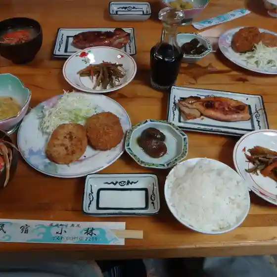
Minshuku Kobayashi
朝日民宿
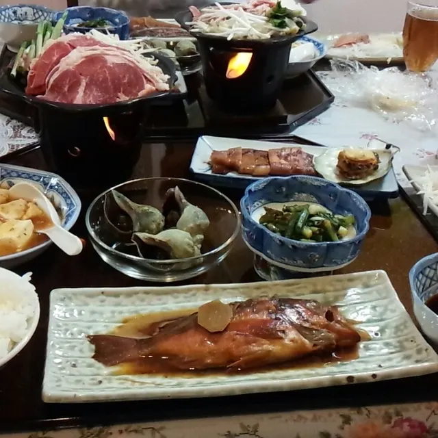
Asahi Minshuku
北海寿司
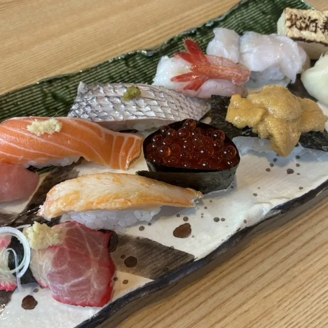
Hokkai Sushi
土井民宿
Tsuchii Minshuku
陽だまり
You Damari
丘の宿 優凪
Oka No Yado Yuu Nagi
坪谷冷菓店
Tsuboya Reika Mise
居酒屋寿
Izakaya Hisashi
おぐろ
Oguro
ひまわり弁当
Himawari Bentou
トラベルハウス想い出
Toraberuhausu Omoide
御宿きくち
Onjuku Kikuchi
双葉寿し
Futaba Hisashi Shi
海館
Umi Kan
楽園 奥尻支店
Rakuen Okushiri Shiten
叶寿司
Kanou Sushi
セイコーマート 奥尻店
Seikoomaato Okushiri Mise
岡本旅館
Okamoto Ryokan
民宿カサイ
Minshuku Kasai
Sights
Okushiri Shima
Okushiri Shima
Nabe Tsuri Iwa
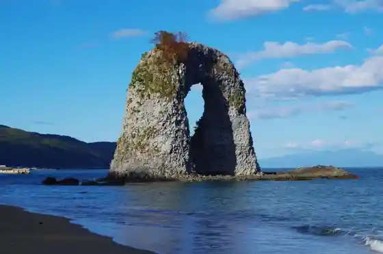
Nabe Tsuri Iwa
Kita Tsui Cape Park
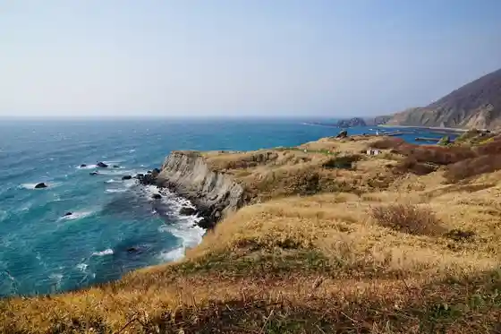
Kita Tsui Cape Park
Unimaru Park
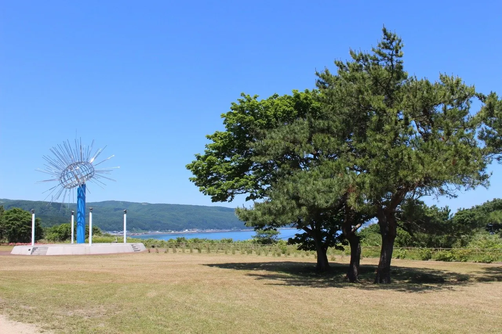
Unimaru Park
Okushiri Wainarii
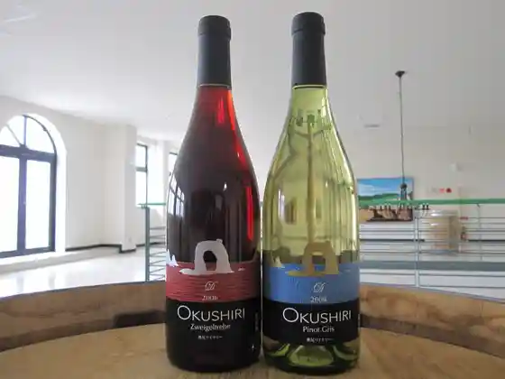
Okushiri Wainarii
Miyazu Benten Miya
Miyazu Benten Miya